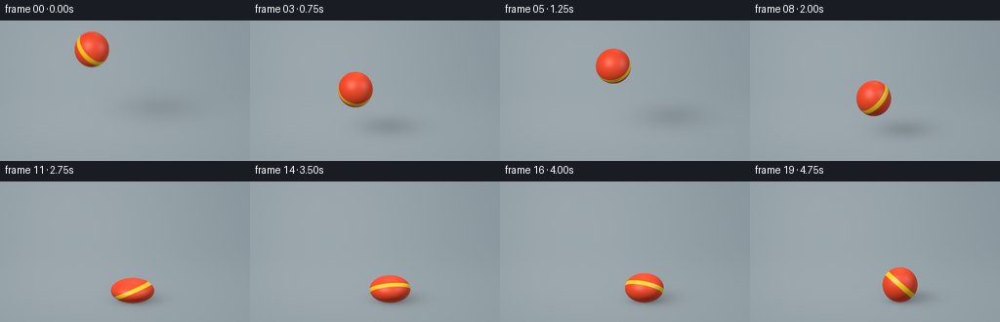
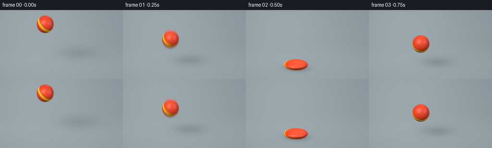
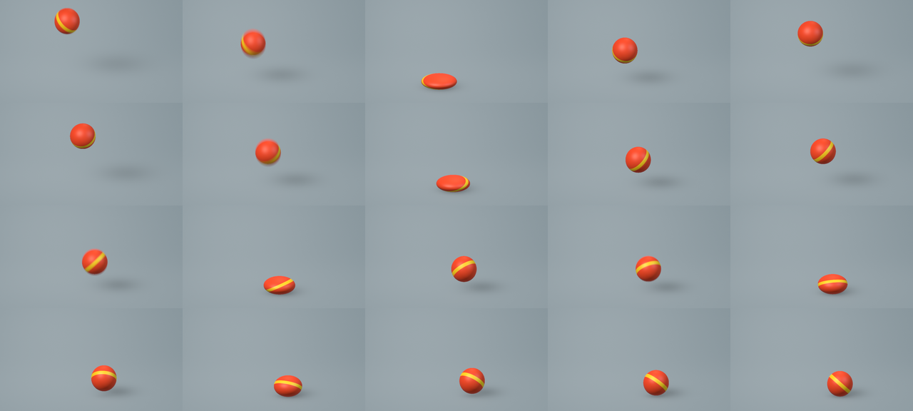

CODING AGENTS AS PIXEL WORLD MODELS
traex/GPT-6.1-Sol · phygen_026
点击播放 · 原生 RGB 像素
逐轮保存的候选
回放视频、检查图与代码变化。
每份候选均可单独播放。实际图片检查记录在下方工具轨迹中。
候选 01播放与检查图
点击播放 · 原生 RGB 像素

展开代码变化
--- 上一保存版本
+++ 本次保存版本
@@ -0,0 +1,177 @@
+from pathlib import Path
+import numpy as np
+from PIL import Image
+import artifact_io
+
+ROOT = Path(__file__).resolve().parent
+W, H, S = 256, 144, 3
+ww, hh = W*S, H*S
+X, Y = np.meshgrid((np.arange(ww)+.5)/S, (np.arange(hh)+.5)/S)
+# Fixed, slightly elevated orthographic studio camera.
+scale = 40.0
+angle = .31
+cs, sn = np.cos(angle), np.sin(angle)
+forward = np.array([0., -sn, -cs])
+up = np.array([0., cs, -sn])
+O = np.zeros((hh,ww,3))
+O[...,0] = (X-128)/scale
+O += ((123-Y)/scale)[...,None]*up
+O -= 12*forward
+plane_t = -O[...,1]/forward[1]
+P = O+plane_t[...,None]*forward
+rng = np.random.default_rng(17)
+grain = rng.normal(0,.0016,(hh,ww))
+# A seamless, matte blue-grey cyclorama, softly lit with no distracting props.
+vig = ((X-135)/230)**2+((Y-67)/180)**2
+lift = .075*np.exp(-((X-65)/140)**2-((Y-30)/120)**2)
+floor_base = np.empty((hh,ww,3))
+floor_base[:] = [.255,.315,.345]
+floor_base += (lift-.04*vig+grain)[...,None]
+floor_base += (.036/(1+np.exp(-(Y-87)/11)))[...,None]
+# Quiet variations in the finely textured rubber/ground, not an artificial grid.
+floor_base += (.0014*np.sin(P[...,0]*78)*np.cos(P[...,2]*53))[...,None]
+
+peaks = np.array([.5,1.75,2.75,3.5,4.,4.4])
+onsets = peaks-.045
+ends = peaks+.055
+R = .45
+
+def state(t):
+ t=max(0.,t)
+ sy=1.
+ h=0.
+ velocity=0.
+ if t < onsets[0]:
+ g=9.8
+ initial_h=2.0
+ v0=(initial_h-.5*g*onsets[0]**2)/onsets[0]
+ h=initial_h-v0*t-.5*g*t*t
+ velocity=-v0-g*t
+ # The fast initial plunge stretches the elastic rubber slightly.
+ sy=1.025+.035*min(1.,t/onsets[0])
+ else:
+ done=False
+ for i in range(len(peaks)):
+ if onsets[i]<=t<=ends[i]:
+ q=(t-onsets[i])/(ends[i]-onsets[i])
+ strengths=[.51,.57,.65,.74,.81,.88]
+ sy=1-(1-strengths[i])*np.sin(np.pi*q)**.8
+ done=True
+ break
+ if i<len(peaks)-1 and ends[i]<t<onsets[i+1]:
+ length=onsets[i+1]-ends[i]
+ dt=t-ends[i]
+ v=4.9*length
+ h=v*dt-4.9*dt*dt
+ velocity=v-9.8*dt
+ sy=1+.08*np.exp(-dt/.12)
+ done=True
+ break
+ if not done:
+ dt=t-ends[-1]
+ if 0<dt<.21:
+ h=1.029*dt-4.9*dt*dt
+ velocity=1.029-9.8*dt
+ else:
+ h=0.
+ sy=1.
+ rx=R/np.sqrt(sy)
+ ry=R*sy
+ # Small lateral drift dies away naturally with the successive contacts.
+ x=-.85+2.3*(1-np.exp(-.22*t))
+ center=np.array([x,ry+max(0,h),0.])
+ radii=np.array([rx,ry,rx])
+ return center,radii,velocity
+
+def ellipsoid_hit(origins, direction, center, radii):
+ q=(origins-center)/radii
+ d=np.asarray(direction)/radii
+ A=np.sum(d*d,axis=-1)
+ B=np.sum(q*d,axis=-1)
+ C=np.sum(q*q,axis=-1)-1
+ disc=B*B-A*C
+ tt=(-B-np.sqrt(np.maximum(0,disc)))/A
+ hit=(disc>=0)&(tt>0)
+ return tt,hit
+
+lights=[(np.array([-3.7,6.5,4.5]),np.array([1.0,.90,.76]),.83),
+ (np.array([3.8,4.,1.8]),np.array([.64,.83,1.]),.36),
+ (np.array([.5,5.,-4.]),np.array([1.,.71,.46]),.27)]
+
+def render(t):
+ center,radii,vel=state(t)
+ color=floor_base.copy()
+ # Analytic soft area-light shadow; the shadow is larger and softer in flight.
+ height=center[1]-radii[1]
+ light=lights[0][0]
+ shadow_c=center-center[1]/(light[1]-center[1])*(light-center)
+ shadow_c[1]=0
+ dx=P[...,0]-shadow_c[0]
+ dz=P[...,2]-shadow_c[2]
+ sx=.39+.17*height
+ sz=.42+.20*height
+ shadow=np.exp(-.5*((dx/sx)**2+(dz/sz)**2))
+ shadow*=.38/(1+.47*height)
+ contact=np.exp(-2.3*(((P[...,0]-center[0])/(radii[0]*1.01))**2+(P[...,2]/(radii[2]*.8))**2))
+ contact*=.34*np.exp(-height*8)
+ color*=(1-shadow-contact)[...,None]
+ # Very faint broad floor reflection gives a material cue without mirror gloss.
+ refl=np.exp(-((P[...,0]-center[0])/.68)**2-((P[...,2]-.48)/1.0)**2)
+ color += (refl*.009*np.exp(-height*.9))[...,None]*np.array([1.,.21,.04])
+
+ tt,hit=ellipsoid_hit(O,forward,center,radii)
+ hit &= tt<plane_t
+ pts=O[hit]+tt[hit,None]*forward
+ local=(pts-center)/radii
+ normals=(pts-center)/(radii*radii)
+ normals/=np.linalg.norm(normals,axis=1)[:,None]
+ # One broad yellow band is part of the rubber, rotating with the rebound.
+ spin=.50+t*1.15
+ axis=np.array([.65*np.cos(spin),.67,.65*np.sin(spin)])
+ axis/=np.linalg.norm(axis)
+ band=np.abs(local@axis)
+ albedo=np.tile(np.array([.94,.073,.023]),(len(pts),1))
+ w=np.clip((.15-band)/.016,0,1)
+ albedo=albedo*(1-w[:,None])+np.array([1.,.64,.015])*w[:,None]
+ # Fine molded rubber texture, subtle enough to remain smooth at this resolution.
+ tex=np.sin(local[:,0]*143+np.sin(local[:,2]*74))*np.sin(local[:,1]*159)*.010
+ albedo*=1+tex[:,None]
+ rgb=albedo*np.array([.18,.205,.225])
+ view=-forward
+ for pos,tint,intensity in lights:
+ l=pos-pts
+ l/=np.linalg.norm(l,axis=1)[:,None]
+ nd=np.maximum(0,np.sum(normals*l,axis=1))
+ rgb+=albedo*(nd*intensity)[:,None]*tint
+ half=l+view
+ half/=np.linalg.norm(half,axis=1)[:,None]
+ nh=np.maximum(0,np.sum(normals*half,axis=1))
+ # Broad, low gloss: a rubber ball rather than glass or metal.
+ spec=.15*nh**32+.024*nh**8
+ rgb+=spec[:,None]*tint*intensity
+ fres=(1-np.maximum(0,normals@view))**4
+ rgb+=fres[:,None]*np.array([.042,.055,.063])
+ color[hit]=rgb
+ return np.clip(color,0,1)
+
+frames=[]
+for i in range(20):
+ t=i/4
+ # Short exposure: perceptible fast downward motion, sharp deformation at impact.
+ if i in (0,1,6,10,13):
+ samples=[max(0,t+d) for d in [-.016,-.008,0,.008,.016]]
+ rgb=sum(render(q) for q in samples)/len(samples)
+ else:
+ rgb=render(t)
+ # Linear-light render -> sRGB encoding, and high-quality spatial antialiasing.
+ rgb=np.where(rgb<=.0031308,12.92*rgb,1.055*np.maximum(rgb,0)**(1/2.4)-.055)
+ img=Image.fromarray(np.uint8(np.clip(rgb,0,1)*255+.5))
+ img=img.resize((W,H),Image.Resampling.LANCZOS)
+ frames.append(np.asarray(img))
+artifact_io.save(np.stack(frames),ROOT)
+# An all-frame overview for efficient inspection.
+sheet=Image.new('RGB',(W*5,H*4))
+for i,frame in enumerate(frames):
+ sheet.paste(Image.fromarray(frame),((i%5)*W,(i//5)*H))
+sheet.save(ROOT/'all_frames.png')
+print('Saved 20 RGB frames, 256x144, 4 fps.')
候选 02播放与检查图
点击播放 · 原生 RGB 像素


展开代码变化
--- 上一保存版本
+++ 本次保存版本
@@ -175,3 +175,11 @@
sheet.paste(Image.fromarray(frame),((i%5)*W,(i//5)*H))
sheet.save(ROOT/'all_frames.png')
print('Saved 20 RGB frames, 256x144, 4 fps.')
+# Also provide a conventional, silent RGB-derived MP4 when the local encoder exists.
+import shutil
+import subprocess
+if shutil.which('ffmpeg'):
+ subprocess.run(['ffmpeg','-hide_banner','-loglevel','error','-y',
+ '-framerate','4','-i',str(ROOT/'frames'/'%02d.png'),
+ '-c:v','libx264','-pix_fmt','yuv420p','-r','4',
+ '-movflags','+faststart',str(ROOT/'video.mp4')],check=True)
可观测工具轨迹
实际执行的命令与返回图片。
命令 1exit 0
/bin/bash -lc "ls -la && cat prompt.txt && printf '\\n--- RULES ---\\n' && cat GENERATION_RULES.md && printf '\\n--- SPEC ---\\n' && cat task_spec.json"
命令 2exit 0
/bin/bash -lc 'cat artifact_io.py'
命令 3exit 0
/bin/bash -lc "cat > generate.py <<'PY'
from pathlib import Path
import numpy as np
from PIL import Image
import artifact_io
ROOT = Path(__file__).resolve().parent
W, H, S = 256, 144, 3
ww, hh = W*S, H*S
X, Y = np.meshgrid((np.arange(ww)+.5)/S, (np.arange(hh)+.5)/S)
# Fixed, slightly elevated orthographic studio camera.
scale = 40.0
angle = .31
cs, sn = np.cos(angle), np.sin(angle)
forward = np.array([0., -sn, -cs])
up = np.array([0., cs, -sn])
O = np.zeros((hh,ww,3))
O[...,0] = (X-128)/scale
O += ((123-Y)/scale)[...,None]*up
O -= 12*forward
plane_t = -O[...,1]/forward[1]
P = O+plane_t[...,None]*forward
rng = np.random.default_rng(17)
grain = rng.normal(0,.0016,(hh,ww))
# A seamless, matte blue-grey cyclorama, softly lit with no distracting props.
vig = ((X-135)/230)**2+((Y-67)/180)**2
lift = .075*np.exp(-((X-65)/140)**2-((Y-30)/120)**2)
floor_base = np.empty((hh,ww,3))
floor_base[:] = [.255,.315,.345]
floor_base += (lift-.04*vig+grain)[...,None]
floor_base += (.036/(1+np.exp(-(Y-87)/11)))[...,None]
# Quiet variations in the finely textured rubber/ground, not an artificial grid.
floor_base += (.0014*np.sin(P[...,0]*78)*np.cos(P[...,2]*53))[...,None]
peaks = np.array([.5,1.75,2.75,3.5,4.,4.4])
onsets = peaks-.045
ends = peaks+.055
R = .45
def state(t):
t=max(0.,t)
sy=1.
h=0.
velocity=0.
if t < onsets[0]:
g=9.8
initial_h=2.0
v0=(initial_h-.5*g*onsets[0]**2)/onsets[0]
h=initial_h-v0*t-.5*g*t*t
velocity=-v0-g*t
# The fast initial plunge stretches the elastic rubber slightly.
sy=1.025+.035*min(1.,t/onsets[0])
else:
done=False
for i in range(len(peaks)):
if onsets[i]<=t<=ends[i]:
q=(t-onsets[i])/(ends[i]-onsets[i])
strengths=[.51,.57,.65,.74,.81,.88]
sy=1-(1-strengths[i])*np.sin(np.pi*q)**.8
done=True
break
if i<len(peaks)-1 and ends[i]<t<onsets[i+1]:
length=onsets[i+1]-ends[i]
dt=t-ends[i]
v=4.9*length
h=v*dt-4.9*dt*dt
velocity=v-9.8*dt
sy=1+.08*np.exp(-dt/.12)
done=True
break
if not done:
dt=t-ends[-1]
if 0<dt<.21:
h=1.029*dt-4.9*dt*dt
velocity=1.029-9.8*dt
else:
h=0.
sy=1.
rx=R/np.sqrt(sy)
ry=R*sy
# Small lateral drift dies away naturally with the successive contacts.
x=-.85+2.3*(1-np.exp(-.22*t))
center=np.array([x,ry+max(0,h),0.])
radii=np.array([rx,ry,rx])
return center,radii,velocity
def ellipsoid_hit(origins, direction, center, radii):
q=(origins-center)/radii
d=np.asarray(direction)/radii
A=np.sum(d*d,axis=-1)
B=np.sum(q*d,axis=-1)
C=np.sum(q*q,axis=-1)-1
disc=B*B-A*C
tt=(-B-np.sqrt(np.maximum(0,disc)))/A
hit=(disc>=0)&(tt>0)
return tt,hit
lights=[(np.array([-3.7,6.5,4.5]),np.array([1.0,.90,.76]),.83),
(np.array([3.8,4.,1.8]),np.array([.64,.83,1.]),.36),
(np.array([.5,5.,-4.]),np.array([1.,.71,.46]),.27)]
def render(t):
center,radii,vel=state(t)
color=floor_base.copy()
# Analytic soft area-light shadow; the shadow is larger and softer in flight.
height=center[1]-radii[1]
light=lights[0][0]
shadow_c=center-center[1]/(light[1]-center[1])*(light-center)
shadow_c[1]=0
dx=P[...,0]-shadow_c[0]
dz=P[...,2]-shadow_c[2]
sx=.39+.17*height
sz=.42+.20*height
shadow=np.exp(-.5*((dx/sx)**2+(dz/sz)**2))
shadow*=.38/(1+.47*height)
contact=np.exp(-2.3*(((P[...,0]-center[0])/(radii[0]*1.01))**2+(P[...,2]/(radii[2]*.8))**2))
contact*=.34*np.exp(-height*8)
color*=(1-shadow-contact)[...,None]
# Very faint broad floor reflection gives a material cue without mirror gloss.
refl=np.exp(-((P[...,0]-center[0])/.68)**2-((P[...,2]-.48)/1.0)**2)
color += (refl*.009*np.exp(-height*.9))[...,None]*np.array([1.,.21,.04])
tt,hit=ellipsoid_hit(O,forward,center,radii)
hit &= tt<plane_t
pts=O[hit]+tt[hit,None]*forward
local=(pts-center)/radii
normals=(pts-center)/(radii*radii)
normals/=np.linalg.norm(normals,axis=1)[:,None]
# One broad yellow band is part of the rubber, rotating with the rebound.
spin=.50+t*1.15
axis=np.array([.65*np.cos(spin),.67,.65*np.sin(spin)])
axis/=np.linalg.norm(axis)
band=np.abs(local@axis)
albedo=np.tile(np.array([.94,.073,.023]),(len(pts),1))
w=np.clip((.15-band)/.016,0,1)
albedo=albedo*(1-w[:,None])+np.array([1.,.64,.015])*w[:,None]
# Fine molded rubber texture, subtle enough to remain smooth at this resolution.
tex=np.sin(local[:,0]*143+np.sin(local[:,2]*74))*np.sin(local[:,1]*159)*.010
albedo*=1+tex[:,None]
rgb=albedo*np.array([.18,.205,.225])
view=-forward
for pos,tint,intensity in lights:
l=pos-pts
l/=np.linalg.norm(l,axis=1)[:,None]
nd=np.maximum(0,np.sum(normals*l,axis=1))
rgb+=albedo*(nd*intensity)[:,None]*tint
half=l+view
half/=np.linalg.norm(half,axis=1)[:,None]
nh=np.maximum(0,np.sum(normals*half,axis=1))
# Broad, low gloss: a rubber ball rather than glass or metal.
spec=.15*nh**32+.024*nh**8
rgb+=spec[:,None]*tint*intensity
fres=(1-np.maximum(0,normals@view))**4
rgb+=fres[:,None]*np.array([.042,.055,.063])
color[hit]=rgb
return np.clip(color,0,1)
frames=[]
for i in range(20):
t=i/4
# Short exposure: perceptible fast downward motion, sharp deformation at impact.
if i in (0,1,6,10,13):
samples=[max(0,t+d) for d in [-.016,-.008,0,.008,.016]]
rgb=sum(render(q) for q in samples)/len(samples)
else:
rgb=render(t)
# Linear-light render -> sRGB encoding, and high-quality spatial antialiasing.
rgb=np.where(rgb<=.0031308,12.92*rgb,1.055*np.maximum(rgb,0)**(1/2.4)-.055)
img=Image.fromarray(np.uint8(np.clip(rgb,0,1)*255+.5))
img=img.resize((W,H),Image.Resampling.LANCZOS)
frames.append(np.asarray(img))
artifact_io.save(np.stack(frames),ROOT)
# An all-frame overview for efficient inspection.
sheet=Image.new('RGB',(W*5,H*4))
for i,frame in enumerate(frames):
sheet.paste(Image.fromarray(frame),((i%5)*W,(i//5)*H))
sheet.save(ROOT/'all_frames.png')
print('Saved 20 RGB frames, 256x144, 4 fps.')
PY
OPENBLAS_NUM_THREADS=1 python generate.py"命令 4exit 0
/bin/bash -lc "if command -v ffmpeg >/dev/null 2>&1; then ffmpeg -hide_banner -loglevel error -y -framerate 4 -i frames/%02d.png -c:v libx264 -pix_fmt yuv420p -r 4 -movflags +faststart video.mp4; fi
python - <<'PY'
from pathlib import Path
import numpy as np
p=Path('.')
z=np.load(p/'pixels.npz')
assert z['pixels'].shape==(144,256,20)
assert len(list((p/'frames').glob('*.png')))==20
for name in ['generate.py','pixels.npz','index.html','inspection.png']:
assert (p/name).is_file()
print('Validated required artifacts.')
PY"命令 5exit 0
/bin/bash -lc "cat >> generate.py <<'PY'
# Also provide a conventional, silent RGB-derived MP4 when the local encoder exists.
import shutil
import subprocess
if shutil.which('ffmpeg'):
subprocess.run(['ffmpeg','-hide_banner','-loglevel','error','-y',
'-framerate','4','-i',str(ROOT/'frames'/'%02d.png'),
'-c:v','libx264','-pix_fmt','yuv420p','-r','4',
'-movflags','+faststart',str(ROOT/'video.mp4')],check=True)
PY
OPENBLAS_NUM_THREADS=1 python generate.py"视觉工具实际返回图片 1

保存候选 2 份；完成命令 5 次；可验证图片返回 1 张。原始 API 响应与完整日志保留在本地。